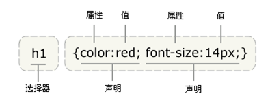

css层叠样式表（Casscading Style Sheet）
CSS 规则由两个主要的部分构成：选择器，以及一条或多条声明
通常是您需要改变样式的HTML元素
h1 {width:300px;height:100px;color:red; font-size:14px;}

二、除了英文单词 red，还可以使用十六进制的颜色值 #ff0000
<1> 十六进制颜色值：
p { color: #ff0000; }
<2> 为了节约字节，我们可以使用 CSS 的缩写形式
p { color: #f00 }
<3> 英文单词 red:
p { color: red; }
大多数样式表包含不止一条规则，而大多数规则包含不止一个声明
body {
color: #000;
background: #fff;
margin: 0;
padding: 0;
font-family: 微软雅黑, Palatino, serif;
}
h1,h2,h3,h4,h5,h6 {
color : green;
}
CSS注释
CSS注释的开始使用/* , 结束使用*/
/* 注释内容 */
/* 文章标题注释 */
h1{color:red;font-size:12px;}
.center {text-align: center}
.str{color:red;font-size:12px;}
h1 和 p 元素都有 center 类。这意味着两者都将遵守 ".center" 选择器中的规则
<h1 class="center">文章的标题</h1>
<p class="center">这是段落的标签</p>
id 选择器可以为标有特定 id 的 HTML 元素指定特定的样式 id 选择器以 "#" 来定义 例： 两个 id 选择器 <p id="red">这个段落是红色。</p> <p id="green">这个段落是绿色。</p> 注意： id 属性只能在每个 HTML 文档中出现一次。 id 选择器和派生选择器 在现代布局中，id 选择器常常用于建立派生选择器
.center {text-align: center}
.str{color:red;font-size:12px;}
h1 和 p 元素都有 center 类。这意味着两者都将遵守 ".center" 选择器中的规则
<h1 class="center">文章的标题</h1>
<p class="center">这是段落的标签</p>
Link样式表式： <link rel=”stylesheet” type=”text/css” href=”my.css”(href表示路径)>
Html式： <style type="text/css">@import url("css.css");></style>
<!--以style="css样式"--> <div style="color:red;font-size:12px;"></div> <div style="color:red;font-size:12px;"></div>
<1> css语法； <2> css 值的不同写法和单位； <3> 空格和大小写; <4> 选择器的分组; <5> CSS注释语法； <6> CSS 类选择器 <7> id 选择器 <8>内嵌样式 <9>外部引入到样式 <10> 行内样式